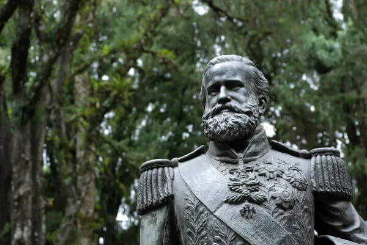

O Império foi o período da história do Brasil que se iniciou com a independência, em 1822, e estendeu-se até 1889, quando a República foi proclamada.

O período imperial foi uma fase da história brasileira iniciada em 1822, quando o Brasil tornou-se independente, e finalizada em 1889, quando houve a Proclamação da República. Nesse período, o Brasil organizou-se politicamente como uma monarquia, sendo governado por um imperador, cujo poder era transmitido de maneira hereditária.
O período imperial da nossa história iniciou-se logo após a independência do
Brasil,
declarada em 7 de setembro de 1822, quando Dom Pedro realizou o grito da independência às
margens do Rio Ipiranga, em São Paulo. Esse, no entanto, é apenas o final de um processo
iniciado em 1808, quando a família real portuguesa mudou-se para o Brasil, dando início ao
Período Joanino.
A mudança da família real portuguesa aconteceu na virada de 1807 para 1808, quando Portugal
foi invadido pelas tropas napoleônicas. Com isso, a família real estabeleceu-se no Rio de
Janeiro e iniciou uma série de transformações que colocaram o Brasil em um novo patamar,
responsável por antecipar nossa independência.
Apesar disso, o ponto de partida para a independência do Brasil ocorreu apenas em 1820,
quando foi iniciada em Portugal a Revolução Liberal do Porto. Nessa
revolução, a burguesia
portuguesa reivindicava o retorno do rei D. João VI para Portugal e exigia a revogação das
medidas que garantiam maior liberdade econômica ao Brasil.
As exigências de Portugal foram enxergadas no Brasil como uma tentativa de recolonizar o
país e de impedir o desenvolvimento econômico que estava em curso. A partir daí, surgiu uma
insatisfação dos brasileiros em relação a Portugal, dando início ao processo de
independência do Brasil, liderado por Dom Pedro, nomeado por seu pai como regente do
país.
Os desgastes nas relações entre Brasil e Portugal fizeram com que Dom Pedro proclamasse a
independência do Brasil. O nosso país, então, converteu-se em uma monarquia, e Dom Pedro foi
coroado imperador, tornando-se Dom Pedro I.
O período imperial do Brasil é dividido em três fases:
- Primeiro Reinado (1822-1831)
- Período Regencial (1831-1840)
- Segundo Reinado (1840-1889)
O Primeiro Reinado foi o período em que o país foi governado por Dom Pedro
I, filho de Dom
João VI e regente do Brasil até sua independência. O Primeiro Reinado ficou marcado pelos
atritos entre D. Pedro I e grupos políticos do Brasil, pelo autoritarismo e pela
incompetência na administração do país.
Com a independência, determinadas regiões do país, como Pará e Maranhão, permaneceram fiéis
a Portugal, desencadeando uma guerra no país. Com o fim da guerra de independência, era
necessário garantir que Portugal reconhecesse a independência brasileira. Esse
reconhecimento foi formalizado em 1825 por meio de negociações mediadas pela
Inglaterra.
A outorga da Constituição de 1824 foi o exemplo mais claro do autoritarismo
que marcou o
reinado de D. Pedro I. Seu governo também foi marcado por decisões equivocadas, como a
Guerra da Cisplatina, que destruiu nossa economia, e por rebeliões, que
demonstravam a
fraqueza do governo no comando do Brasil. Pressionado por diversos grupos insatisfeitos, D.
Pedro I renunciou ao trono em 1831, em favor de seu filho.
O filho de D. Pedro I, porém, não tinha idade para assumir o Brasil. Assim, iniciou-se um
período de transição em que o país foi governado por regentes até que o futuro imperador
tivesse a idade mínima para assumir o país – 18 anos –, conforme estipulava a Constituição
de 1824.
Esse período de transição ficou conhecido como Período Regencial.
Regentes eleitos governaram o Brasil durante o Período Regencial, fase que ficou marcada
pelas disputas entre os parlamentares brasileiros e por rebeliões provinciais. Ao longo
desse período, aconteceram rebeliões como a Cabanagem, Balaiada, Sabinada, Revolta
dos Malês
e a Revolução Farroupilha.
O período das regências teve fim com o Golpe da Maioridade, no qual os
políticos brasileiros
anteciparam a maioridade de Pedro de Alcântara para que ele pudesse ser coroado imperador do
Brasil com 14 anos de idade. Esse golpe parlamentar aconteceu em 1840, dando início ao
Segundo Reinado.
O Segundo Reinado, período em que Dom Pedro II foi o imperador do Brasil,
estendeu-se de
1840 a 1889. O reinado de D. Pedro II pode ser dividido em diversas fases: um período
inicial de consolidação, seguido por uma fase de auge e, por fim, um estágio de decadência.
A campanha abolicionista seguiu um longo percurso e foi um dos grandes
acontecimentos que
marcaram o Segundo Reinado. Quando D. Pedro II assumiu a presidência, o Brasil era
pressionado pela Inglaterra a proibir o tráfico de escravos da África. Com a proibição do
tráfico, em 1850, a monarquia iniciou uma transição bem lenta até a abolição do trabalho
escravo do país, em 1888, durante os momentos finais da monarquia brasileira.
Outro importante acontecimento do Segundo Reinado foi a Guerra do Paraguai, conflito que
começou em 1864 e acabou em 1870 com a vitória do Brasil e de seus aliados. Nesse combate,
Brasil, Argentina e Uruguai uniram-se para lutar contra o Paraguai e contra o ditador
Solano
López. A Guerra do Paraguai foi resultado dos choques de interesses que
existiam entre as
nações sul-americanas e teve como consequência final a destruição do Paraguai. Para o
Brasil, as grandes consequências foram o enfraquecimento da monarquia e a
instauração de uma
forte crise econômica no país.
A decadência da monarquia, resultado de seu enfraquecimento nos meios políticos e nas
elites econômicas do Brasil, fez com que o republicanismo ganhasse força como alternativa
política. Essa forma de governo foi viabilizada pela conspiração dos militares contra a
monarquia.
A Proclamação da República aconteceu em 15 de novembro de 1889, quando foi
organizado um
golpe militar para destituir o gabinete ministerial ocupado pelo Visconde de Ouro
Preto. A
destituição do gabinete e as articulações políticas levaram José do Patrocínio a proclamar a
república. D. Pedro II e a família real partiram, então, para a Europa em exílio.
Nos primeiros anos da monarquia, a vida política do Brasil concentrava-se em torno de três
grupos políticos: liberais moderados, liberais exaltados e restauradores, cada um com suas
próprias convicções políticas. Durante o Primeiro Reinado e o Período Regencial, esses
grupos converteram-se em dois, liberais e conservadores, os quais controlaram nossa política
no Segundo Reinado.
Havia muitas tensões políticas no país envolvendo diferentes questões. Existiam os
federalistas, que defendiam maior autonomia para as províncias, enquanto outros defendiam a
centralização do poder para que as províncias não tivessem autonomia; alguns eram
monarquistas, enquanto outros eram republicanos, etc.
A disputa entre liberais e conservadores pelo poder no parlamento, por meio do gabinete
ministerial, deixava nossa política bastante instável. D. Pedro II foi o responsável por
controlar as disputas políticas e por criar um regime conhecido como parlamentarismo às
avessas, sistema parlamentar no qual o imperador tinha plenos poderes de destituir o
gabinete ministerial.
Em relação ao trabalho, as duas grandes questões eram referentes ao trabalho escravo e à
chegada dos primeiros imigrantes europeus ao Brasil. No que diz respeito à escravidão,
destaca-se a pressão dos ingleses para que o Brasil colocasse fim ao tráfico de escravos – o
que, inclusive, quase levou nosso país à guerra contra os ingleses.
O processo de transição para o fim do trabalho escravo foi realizado lentamente,
demonstrando o desinteresse da monarquia em acabar com a escravidão no Brasil, uma vez que
isso poderia prejudicar politicamente o monarca brasileiro. No final da década de 1880,
quando a situação já era insustentável, a campanha abolicionista ganhou força no
país. Em
1888, a Lei Áurea foi assinada, proibindo o trabalho escravo dos negros em
nosso país.
A vinda dos imigrantes ao Brasil surgiu como alternativa para substituir os escravos, que,
após 1850, com a proibição do tráfico negreiro, estavam escasseando em nosso país. Os
imigrantes foram muito importantes para as fazendas de café, que começaram a crescer no
Oeste Paulista. Vieram para o Brasil um grande número de italianos e portugueses, bem como
alemães e espanhóis.
Brasil Império é o nome dado ao período que se estendeu de 1822 a 1889. A independência do
Brasil marcou o início do período imperial, que foi encerrado com a Proclamação da
República. O período imperial é dividido em três fases: Primeiro Reinado, Período Regencial
e Segundo Reinado.
O Primeiro Reinado destacou-se pelo autoritarismo de D. Pedro I, que levou ao desgaste da
sua relação com a elite política e econômica do país, fazendo com que o imperador
renunciasse ao cargo.
O Período Regencial foi um momento de transição e teve dois grandes destaques: as brigas
políticas e as revoltas provinciais.
Por fim, o Segundo Reinado foi o maior e mais estável período da monarquia no Brasil, quando
D. Pedro II governou o país por quase meio século. Essa época foi marcada por importantes
eventos no Brasil, como a Guerra do Paraguai. Durante esse período, o país passou por
transformações que levaram ao fim do trabalho escravo e à chegada de milhares de imigrantes
no país. O golpe militar que conduziu à proclamação da República deu fim à monarquia em
1889.